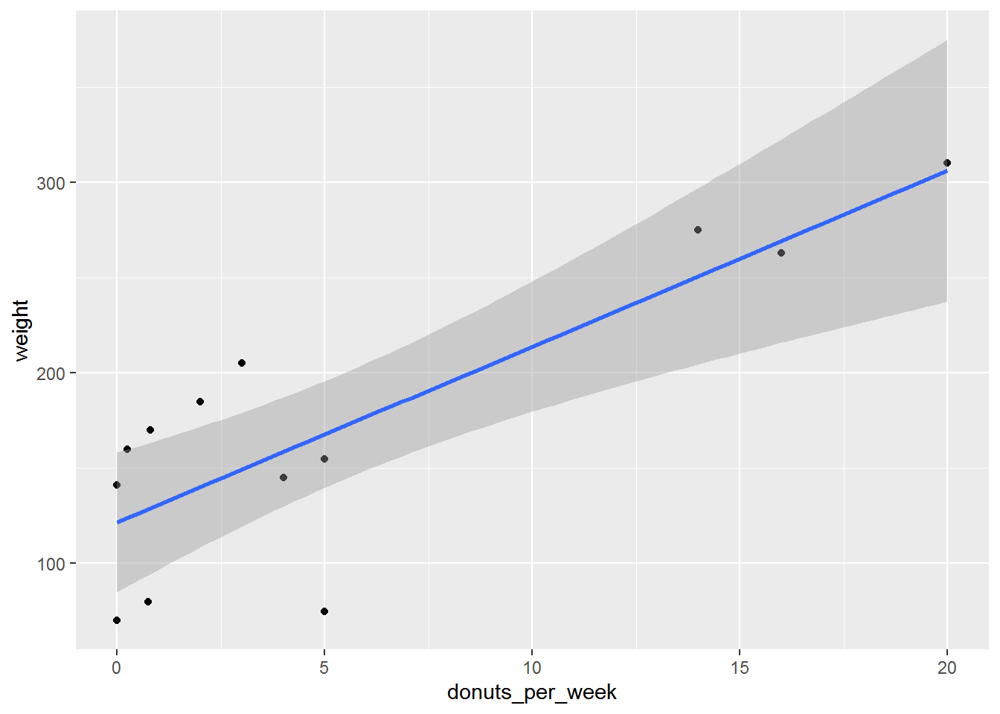
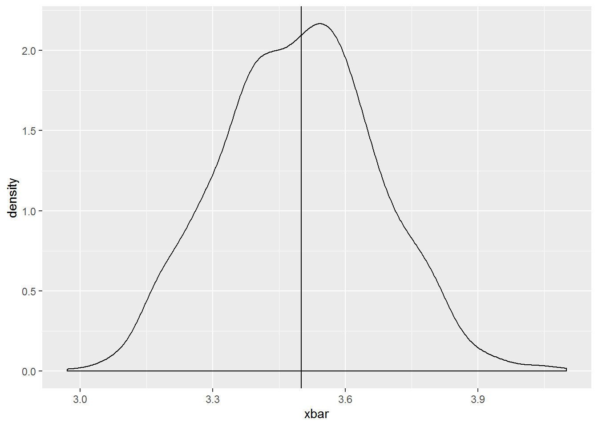
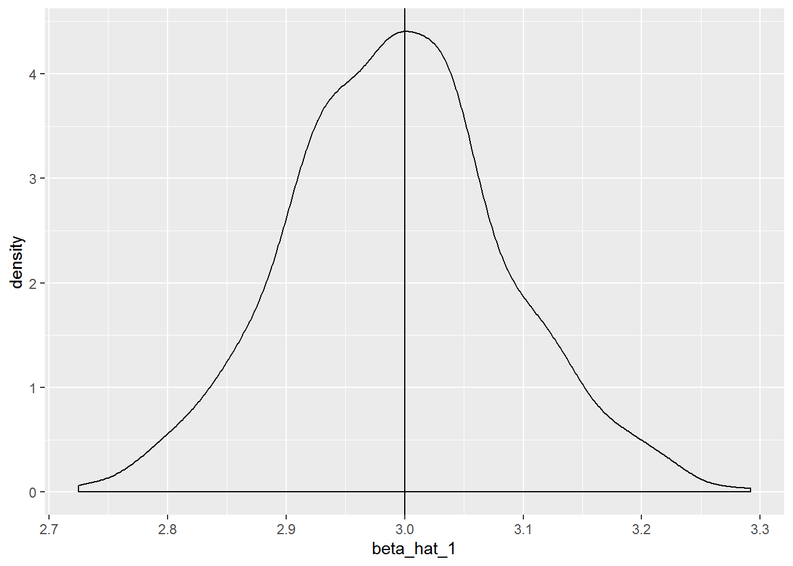

Chapter 5 Bivariate OLS: The Foundation of Econometric Analysis
We will work through Computing Corner.
5.1 Estimating a simple regression
To run a simple regression in R, make us of the function lm. Like all functions lm requires and argument list. You can see the arguments required and the defaualt values, if any, in a variety of ways in R Studio. args(lm) will return the arguments for the lm function. ?lm will open the help page in the Files/Plots/Packages/Help Pane, which can also be accessed by typing lm in the search in the same pane. Estimating a regression using lm requires only two arguments: the formula and data arguments. If you provide those arguments in that order, R doesn’t require that you use the argument’s name. This is true for all functions in R, the default is that the arguments appear in order. We can see by calling str on ols_donuts that lm creates a list object which contains 12 elements. A list is an object that contains elements of several different types like, strings, vectors, matrices, lists, etc. Each of those elements can be extracted from the list in much the same way as accessing pieces of a data frame.
library(magrittr)
load("donuts.RData")
ols_donuts <- lm(formula = weight ~ donuts_per_week, data = donuts)
ols_donuts %>%
str()List of 12
$ coefficients : Named num [1:2] 121.61 9.22
..- attr(*, "names")= chr [1:2] "(Intercept)" "donuts_per_week"
$ residuals : Named num [1:13] 24.26 19.39 -51.61 -92.73 3.92 ...
..- attr(*, "names")= chr [1:13] "1" "2" "3" "4" ...
$ effects : Named num [1:13] -619.6 215.66 -60.24 -99.06 4.49 ...
..- attr(*, "names")= chr [1:13] "(Intercept)" "donuts_per_week" "" "" ...
$ rank : int 2
$ fitted.values: Named num [1:13] 251 122 122 168 306 ...
..- attr(*, "names")= chr [1:13] "1" "2" "3" "4" ...
$ assign : int [1:2] 0 1
$ qr :List of 5
..$ qr : num [1:13, 1:2] -3.606 0.277 0.277 0.277 0.277 ...
.. ..- attr(*, "dimnames")=List of 2
.. .. ..$ : chr [1:13] "1" "2" "3" "4" ...
.. .. ..$ : chr [1:2] "(Intercept)" "donuts_per_week"
.. ..- attr(*, "assign")= int [1:2] 0 1
..$ qraux: num [1:2] 1.28 1.31
..$ pivot: int [1:2] 1 2
..$ tol : num 0.0000001
..$ rank : int 2
..- attr(*, "class")= chr "qr"
$ df.residual : int 11
$ xlevels : Named list()
$ call : language lm(formula = weight ~ donuts_per_week, data = donuts)
$ terms :Classes 'terms', 'formula' language weight ~ donuts_per_week
.. ..- attr(*, "variables")= language list(weight, donuts_per_week)
.. ..- attr(*, "factors")= int [1:2, 1] 0 1
.. .. ..- attr(*, "dimnames")=List of 2
.. .. .. ..$ : chr [1:2] "weight" "donuts_per_week"
.. .. .. ..$ : chr "donuts_per_week"
.. ..- attr(*, "term.labels")= chr "donuts_per_week"
.. ..- attr(*, "order")= int 1
.. ..- attr(*, "intercept")= int 1
.. ..- attr(*, "response")= int 1
.. ..- attr(*, ".Environment")=<environment: R_GlobalEnv>
.. ..- attr(*, "predvars")= language list(weight, donuts_per_week)
.. ..- attr(*, "dataClasses")= Named chr [1:2] "numeric" "numeric"
.. .. ..- attr(*, "names")= chr [1:2] "weight" "donuts_per_week"
$ model :'data.frame': 13 obs. of 2 variables:
..$ weight : num [1:13] 275 141 70 75 310 80 160 263 205 185 ...
..$ donuts_per_week: num [1:13] 14 0 0 5 20 0.75 0.25 16 3 2 ...
..- attr(*, "terms")=Classes 'terms', 'formula' language weight ~ donuts_per_week
.. .. ..- attr(*, "variables")= language list(weight, donuts_per_week)
.. .. ..- attr(*, "factors")= int [1:2, 1] 0 1
.. .. .. ..- attr(*, "dimnames")=List of 2
.. .. .. .. ..$ : chr [1:2] "weight" "donuts_per_week"
.. .. .. .. ..$ : chr "donuts_per_week"
.. .. ..- attr(*, "term.labels")= chr "donuts_per_week"
.. .. ..- attr(*, "order")= int 1
.. .. ..- attr(*, "intercept")= int 1
.. .. ..- attr(*, "response")= int 1
.. .. ..- attr(*, ".Environment")=<environment: R_GlobalEnv>
.. .. ..- attr(*, "predvars")= language list(weight, donuts_per_week)
.. .. ..- attr(*, "dataClasses")= Named chr [1:2] "numeric" "numeric"
.. .. .. ..- attr(*, "names")= chr [1:2] "weight" "donuts_per_week"
- attr(*, "class")= chr "lm"You can see the type for each of the 12 elements in the list. Each of those elements can be extracted by using the $ convention you use to get variables from a data frame (which is a type of list) as describe in the text. In addition, there are many commands that will extract a standard set of elements and present them in conventional ways. For example, to get the regression results, summary from base R, stargazer from the stargazer package, and tidy and glance from the broom package provide the output in useful ways. augment from the broom package creates a tibble of actual, fitted, residuals, etc. In fact, all of the commands in the broom package create tibbles which can useful for further analysis. stargazer can be modified to include a variety of statistics. So, you can extract fitted values or residuals, e.g., in the same way you retrieve any data from a data frame or tibble.
Call:
lm(formula = weight ~ donuts_per_week, data = donuts)
Residuals:
Min 1Q Median 3Q Max
-92.73 -13.51 3.92 36.08 55.72
Coefficients:
Estimate Std. Error t value Pr(>|t|)
(Intercept) 121.61 16.59 7.33 0.000015 ***
donuts_per_week 9.22 1.96 4.71 0.00064 ***
---
Signif. codes: 0 '***' 0.001 '**' 0.01 '*' 0.05 '.' 0.1 ' ' 1
Residual standard error: 45.8 on 11 degrees of freedom
Multiple R-squared: 0.668, Adjusted R-squared: 0.638
F-statistic: 22.2 on 1 and 11 DF, p-value: 0.000643
===============================================
Dependent variable:
---------------------------
weight
-----------------------------------------------
donuts_per_week 9.220***
(1.960)
Constant 122.000***
(16.600)
-----------------------------------------------
Observations 13
R2 0.668
Adjusted R2 0.638
Residual Std. Error 45.800 (df = 11)
F Statistic 22.200*** (df = 1; 11)
===============================================
Note: *p<0.1; **p<0.05; ***p<0.01# A tibble: 2 x 5
term estimate std.error statistic p.value
<chr> <dbl> <dbl> <dbl> <dbl>
1 (Intercept) 122. 16.6 7.33 0.0000149
2 donuts_per_week 9.22 1.96 4.71 0.000643 # A tibble: 1 x 11
r.squared adj.r.squared sigma statistic p.value df logLik AIC BIC
<dbl> <dbl> <dbl> <dbl> <dbl> <int> <dbl> <dbl> <dbl>
1 0.668 0.638 45.8 22.2 6.43e-4 2 -67.1 140. 142.
# ... with 2 more variables: deviance <dbl>, df.residual <int># A tibble: 13 x 9
weight donuts_per_week .fitted .se.fit .resid .hat .sigma .cooksd
<dbl> <dbl> <dbl> <dbl> <dbl> <dbl> <dbl> <dbl>
1 275 14 251. 21.0 24.3 0.211 47.3 0.0474
2 141 0 122. 16.6 19.4 0.131 47.6 0.0156
3 70 0 122. 16.6 -51.6 0.131 44.7 0.110
4 75 5 168. 12.7 -92.7 0.0773 37.1 0.186
5 310 20 306. 31.2 3.92 0.464 48.0 0.00591
6 80 0.75 129. 15.7 -48.5 0.117 45.2 0.0844
7 160 0.25 124. 16.3 36.1 0.126 46.5 0.0513
8 263 16 269. 24.3 -6.19 0.281 48.0 0.00495
9 205 3 149. 13.6 55.7 0.0879 44.4 0.0781
10 185 2 140. 14.4 44.9 0.0986 45.7 0.0584
11 170 0.8 129. 15.6 41.0 0.116 46.0 0.0597
12 155 5 168. 12.7 -12.7 0.0773 47.9 0.00350
13 145 4 159. 13.0 -13.5 0.0807 47.8 0.00415
# ... with 1 more variable: .std.resid <dbl>5.2 scatter Plot with Regression Line
ggplot2 makes adding a fitted regression line to a scatter plot very easy. You need only add a geometry called geom_smooth with the appropriate method to plot. The default is to include a confidence interval estimate around the fitted line. To remove the error band add the option se = FALSE.

5.3 Subsetting Data for Regressions
Subsetting can be directly done with the subset option in the lm call. To run a regression that excludes the Homer record, use the option subset = (name != "Homer").
ols_no_homer <- lm(formula = weight ~ donuts_per_week, data = donuts, subset = (name != "Homer"))
ols_no_homer %>%
tidy()# A tibble: 2 x 5
term estimate std.error statistic p.value
<chr> <dbl> <dbl> <dbl> <dbl>
1 (Intercept) 122. 17.1 7.12 0.0000323
2 donuts_per_week 8.74 2.19 4.00 0.00252
Call:
lm(formula = weight ~ donuts_per_week, data = donuts, subset = (name !=
"Homer"))
Residuals:
Min 1Q Median 3Q Max
-90.58 -20.99 7.26 37.24 56.90
Coefficients:
Estimate Std. Error t value Pr(>|t|)
(Intercept) 121.87 17.13 7.12 0.000032 ***
donuts_per_week 8.74 2.19 4.00 0.0025 **
---
Signif. codes: 0 '***' 0.001 '**' 0.01 '*' 0.05 '.' 0.1 ' ' 1
Residual standard error: 47.3 on 10 degrees of freedom
Multiple R-squared: 0.615, Adjusted R-squared: 0.577
F-statistic: 16 on 1 and 10 DF, p-value: 0.00252Alternatively we can make use of filter from the dplyr package. Recall, filter is the data manipulation verb that chooses observations in a data frame. I introduce the exposition operator %$% from the magrittr package. %$% is useful at the end of a pipeline to expose your manipulated data to function. You can use it with subset or filter.
Call:
lm(formula = weight ~ donuts_per_week)
Coefficients:
(Intercept) donuts_per_week
121.87 8.74
Call:
lm(formula = weight ~ donuts_per_week)
Coefficients:
(Intercept) donuts_per_week
121.87 8.74 To include those observations where weight is greater than 100:
Call:
lm(formula = weight ~ donuts_per_week)
Coefficients:
(Intercept) donuts_per_week
151.05 7.66
Call:
lm(formula = weight ~ donuts_per_week)
Coefficients:
(Intercept) donuts_per_week
151.05 7.66 5.4 Heteroscesdasticity-consistent standard errors.
The estimatr package allows you to directly calculate robust standard errors.
R Studio allows you to install packages in the Files/Plots/Packages/Help Pane by clicking on the Install icon on the Packages tab; as you type the name of the package, you will see completion suggestions. Choose the package you wish to install and R Studio will install it. You can load a package by checking the box next to its name in the Packages tab. Clicking on the packages name will bring up info about the pacakge.
Call lm_robust() to estimate an OLS model with robust standard errors with the se_type = "HC0 option for the most common method of generating robust standard errors.
library(estimatr)
ols_robust <- lm_robust(weight ~ donuts_per_week, donuts, se_type = "HC0")
ols_robust %>%
tidy() term estimate std.error statistic p.value conf.low
1 (Intercept) 121.61 15.87 7.66 0.00000983 86.68
2 donuts_per_week 9.22 1.02 9.07 0.00000194 6.99
conf.high df outcome
1 156.5 11 weight
2 11.5 11 weight5.5 Generating Random Numbers
Random numbers can be useful in variety of applications in econometrics. One application is simulation, where we simulate observations to demonstrate properties of OLS estimators, eg. Once you’ve decided the distribution from which your random numbers will be drawn and the number of draws you wish to make, you will create a vector of those observations. The most intuitive form of random number generation is sample. Suppose you wanted to simulate the role of a single die, use sample(1:6,1) or using the pipe operator 1:6 %>% sample(1). Read the command aloud like this “from the integers 1, 2, 3, 4, 5, 6, choose a sample of size 1.” You can choose larger samples by changing the size argument. The size argument can not be larger than the number of integers unless the default option of replace = FALSE, is changed to replace = TRUE. To generate a simulation of 100 rolls of a single die call 1:6 %>% sample(100, replace = TRUE).
Random numbers may be generate from any probability distribution. The random number generator function for a given probability distribution begins with the letter r followed by the name of the distribution in r. To generate uniform random numbers between 0 and 1, use runif, from a normal distribution use rnorm, etc. Use args(distribution name) or ?distribution name to find out more about the necessary arguments for individual distributions.
5.6 Simulations
Monte Carlo simulations are a useful tool for understanding how the value of an estimator changes as the sample data changes. Consider the example of rolling a single die n times and calculating the average number of pips on the side up face of the die. We know that \(\bar X\) is an ubiased estimator of \(\mu\). Recall that an estimator, \(\hat\theta\) is unbiased if \(E(\hat\theta) = \theta\). We can show that \(E(\bar X) = \mu\). Let \[\bar X = \frac{\sum{x_i}}{n}\]
Then, \[\begin{aligned} E(\bar{X}) &= E\left( \frac{\sum{x_i}}{n} \right)\\ &= \frac{1}{n}\sum{E(x_i)} \\ &= \frac{1}{n}\sum{\mu}\\ &= \frac{1}{n}n\mu\\ &= \mu \end{aligned}\]
So, we would expect \(\bar X = 3.5\) since \(\mu = 3.5\). Simulating 100 rolls of a single die 1000 times would allow us to look at the sampling distribution of the sample mean. This will allow us to see the range of values that \(\bar X\) might take on.
Perform a Monte Carlo simulation by generating many samples, find the value of the estimator, and investigate it’s distribution. We could do this by generating a single sample, calculating the value of the estimator, and repeating the desired number of times. This would be tedious. We can instead make use of the concept of a loop in R. A loop evaluates the same code repeatedly until some threshold is met.
There are two types of loops in R, for loops and while loops. A for loop runs the code a specific number of times; a while loop runs the code until a logical condition is met. We will use a for loop to run our simulation. First, instruct R on the number of times to run through the loop. The loop itself is contained between the braces {}.
# library(tidyverse)
xbar <- 1 # initialize the vector to store the observations of x bar
for(i in 1:1000) {
x <- 1:6 %>% sample(100, replace = T)
xbar[i] <- mean(x)
}
xbar %>%
mean() # find the mean of the 1000[1] 3.49xbar %>%
as.data.frame() %>% # coerce xbar to a data frame
ggplot(aes(x = xbar)) + # map xbar to x
geom_density() + # geom_density creates a "probability distribution"
geom_vline(xintercept = 3.5) # place a verticle line at the mean.
We could do the same thing with the simple linear regression \(Y_i = \beta_0+\beta_1X_i+\epsilon_i\). We know the OLS estimator of \(\beta_1\) is \(\hat\beta_1\). The value of the estimator, called the estimate, depends upon the particular sample that is drawn. Monte Carlo simulation will allows to see how the estimate changes across many samples.
For \(\hat\beta_j\) to be an unbiased esitmator of \(\beta_j\), \(E(\hat\beta_j) = \beta_j\). The proof is beyond the scope of this manual, but you will see or have seen the proof.
Suppose we perform a Monte Carlo simulation with know values of \(\beta_0\) and \(\beta_1\) where the error term \(\epsilon_i\) is drawn from a normal distribution with a mean of zero and a constant variance, i.e., \(\epsilon_i ~ N(0, \sigma^2)\), will the estimates be statistically the same as the known parameters. Let’s find out. Suppose the population regression function is \(y_i = 10 + 3x_i\),
n <- 50
N <- 1000 # of simulations
beta_0 <- 10
beta_1 <- 3
beta_hat_0 <- 0
beta_hat_1 <- 0
y <- 0
x <- 1:10 %>% sample(n, replace = T) # we would determine x here if x were fixed in repeated sampling
for(i in 1:N) {
x <- 0:10 %>% sample(n, replace = T)
epsilon <- rnorm(n, 0 , 2)
y <- beta_0 + beta_1*x + epsilon
beta_hat_0[i] <- lm(y ~ x)$coef[1]
beta_hat_1[i] <- lm(y ~ x)$coef[2]
}
#
beta_hat_0 %>%
mean()[1] 10.1[1] 2.99beta_hat_0 %>%
as.data.frame() %>%
ggplot(aes(x = beta_hat_0)) +
geom_density() +
geom_vline(xintercept = 10)
beta_hat_1 %>%
as.data.frame() %>%
ggplot(aes(x = beta_hat_1)) +
geom_density() +
geom_vline(xintercept = 3)